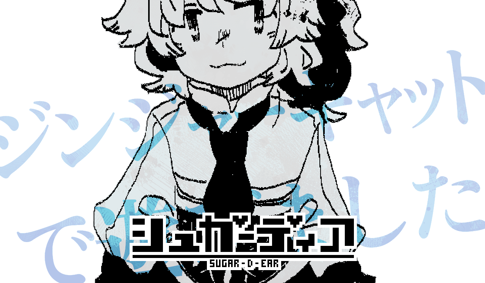

「……あたしね、がんばったの」
ジンジャーキャットは、何かを思い出すように目を伏せました。
「必死だった。ドクターに、また死んでほしくなかった。あたし、ドクターのこと、大好きだったんだ」
体格に比べて少し大きな手が、やわらかくシャツの胸元をつかんでいます。
ジンジャーキャットらしくもなく静かに、考えを巡らせているようでした。
「多分ね、あたしだけ何も知らなかった」
「ドッグもバニーも大人みたいな顔するし、マウスもぽやぽやしといてひみつばっかりで」
ちょっとずるいなって、思わないこともないよ。
……あ、これはみんなにナイショね？ 絶対だよ？
少しだけ慌てた口止めをして、ジンジャーキャットは一呼吸置きます。
「でも、がんばったからきっとドクターは折れてくれた」
「それが正しいとかじゃ多分ないんだ。ドクターはあたしたちのわがままを許してくれたの」
甘い色の髪を、開け放った窓からの風が揺らします。
ジンジャーキャットはシャツから指を離して、向き直るように笑顔を見せました。
「きっとドクターも、あたしたちのこと大好きって思ってくれてるの。だから今は、それで十分かな」
言ってくれなくても、言わないことがあっても、順番に聞いていけばいいのだと。
決意表明と呼ぶにはあんまりにも柔らかく、ジンジャーキャットは笑うのでした。
「……あたしね、がんばったの」
ジンジャーキャットは、何かを思い出すように目を伏せました。
「がんばったよ。ドクターに、また死んでほしくなかったんだ。……どうしても」
体格に比べて少し大きな手が、ぎゅっとシャツの胸元をつかんでいます。
ジンジャーキャットらしくもなく静かに、考えを巡らせているようでした。
「でもね、きっとそれはドクターも同じだったんだと思う」
「どうしても降参できないって、きっと思ってたんだ」
それはね、ちょっとだけわかる。
……あ、これはみんなにナイショね？ 言ったら怒るよ？
少しだけ慌てた口止めをして、ジンジャーキャットは一呼吸置きます。
「譲ってくれないのは悲しかったよ」
「でもそれって、ドクターがあたしたちのこと一人前に見てくれた証拠だとも思うんだ」
甘い色の髪を、開け放った窓からの風が揺らします。
ジンジャーキャットはしわの寄ったシャツから指を離して、向き直るように笑顔を見せました。
「あたし、これからも頑張るよ。ドクターが心配する必要がないくらい」
「だってあたしたち、ドクターのシュガーディアだもん」
それにあたし、ドクターのことはずっと大好きだから、いなくなっちゃったって何も変わらないよ。
決意表明と呼ぶにはあんまりにも柔らかく、ジンジャーキャットは笑うのでした。